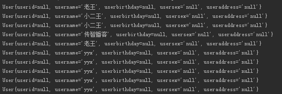
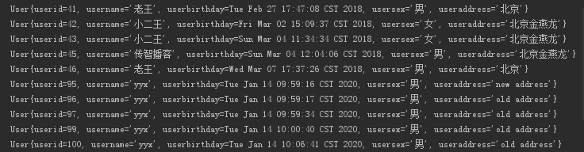
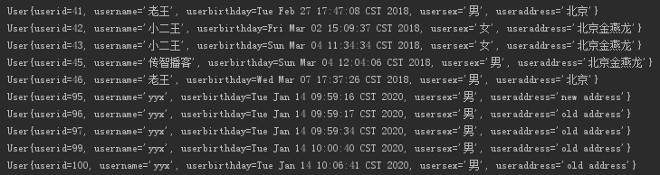
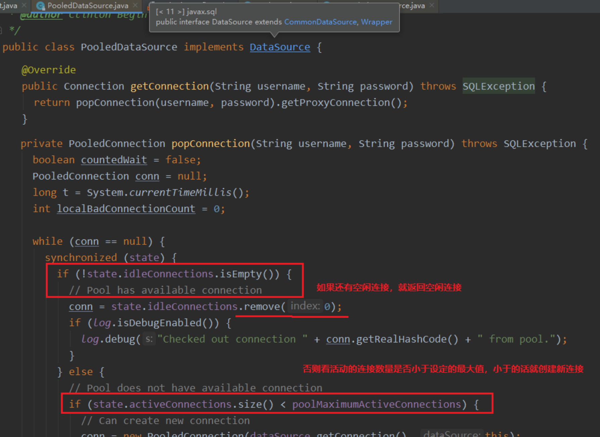
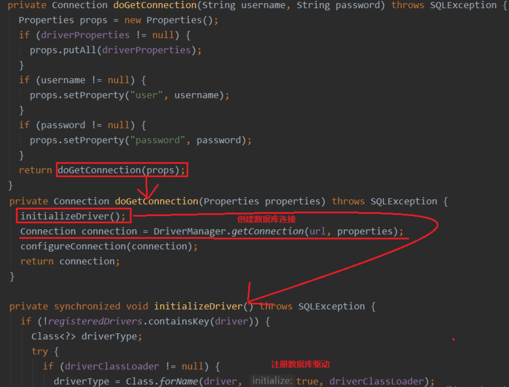

MyBatis
3.基于代理Dao的CRUD操作
3.1.搭建步骤
- 创建maven工程
- 导入坐标
- 编写必要代码(实体类和持久层接口)
- 编写
SqlMapConfig.xml - 编写映射配置文件
- 编写测试类
3.2.根据ID查询
findById方法
1 | public interface IUserDao { |
- 在用户的映射配置文件中配置
resultType属性：用于指定结果集的类型parameterType属性：用于指定传入参数的类型sql语句中使用#{}字符：它代表占位符，相当于原来jdbc部分的?，都是用于执行语句时替换实际的数据。具体的数据是由#{}里面的内容决定的#{}中内容的写法：由于数据类型是基本类型，所以此处可以随意写
1 | <select id="findById" resultType="top.carpenter.pojo.User" parameterType="java.lang.Integer"> |
3.3.保存操作
saveUser方法
1 | public IUserDao { |
- 在用户的映射配置文件中配置
#{}中内容的写法：由于我们保存方法的参数是一个User对象，此处要写User对象中的属性名称。用的是ognl表达式ognl表达式- 它是apache提供的一种表达式语言， 全称是
object Graphic Navigation Language对象图导航语言 - 按照一定的语法格式来获取数据的。语法格式就是使用
#{对象.对象}的方式 #{user.username}会先去找user对象，然后在user对象中找到username属性，并调用getUsername()方法把值取出来。但是在parameterType属性上指定了实体类名称top.carpenter.pojo.User，所以可以省略user.直接写username
- 它是apache提供的一种表达式语言， 全称是
1 | <insert id="saveUser" parameterType="top.carpenter.pojo.User"> |
3.4.用户更新
updateUser方法
1 | public interface IUserDao { |
- 在用户的映射配置文件中配置
1 | <update id="updateUser" parameterType="top.carpenter.pojo.User"> |
3.5.用户删除
deleteUser方法
1 | public interface IUserDao { |
- 在用户的映射配置文件中配置
1 | <delete id="deleteUser" parameterType="java.lang.Integer"> |
3.6.用户模糊查询
findByName方法
1 | public interface IUserDao { |
- 在用户的映射配置文件中配置
- 虽然 UserMapper 中方法的返回值为 List
，但是映射文件中 resultType写 User就行。因为如果有多条记录的话，Mybatis 会自动帮我们封装成一个 List 集合。
- 虽然 UserMapper 中方法的返回值为 List
1 | <select id="findByName" resultType="top.carpenter.pojo.User" parameterType="String"> |
3.7.查询使用聚合函数
findTotal方法
1 | public interface IUserDao { |
- 在用户的映射配置文件中配置
1 | <select id="findTotal" resultType="int"> |
3.8.测试
1 | package top.carpenter; |
3.9.MyBatis对比JDBC
数据库链接创建、释放频繁造成系统资源浪费从而影响系统性能，使用数据库链接池可解决此问题
- 解决：在
SqlMapConfig.xml中配置数据链接池，使用连接池管理数据库链接
- 解决：在
Sql语句写在代码中造成代码不易维护，实际应用sql变化的可能较大，sql变动需要改变java代码- 解决：将
Sql语句配置在XXXXmapper.xml文件中与java代码分离
- 解决：将
向
sql语句传参数麻烦，因为sql语句的where条件不一定，可能多也可能少，占位符需要和参数对应- 解决：
Mybatis自动将java对象映射至sql语句，通过statement中的parameterType定义输入参数的类型
- 解决：
对结果集解析麻烦，
sql变化导致解析代码变化，且解析前需要遍历，如果能将数据库记录封装成pojo对
象解析比较方便- 解决：
Mybatis自动将sql执行结果映射至java对象，通过statement中的resultType定义输出结果的类型
- 解决：
4.Mybatis的参数深入
4.1.@parameterType参数深入
parameterType属性可以用于给SQL语句传参- 属性的取值
- 基本类型
- 基本类型可以直接写类型名称，也可以使用
包名.类名的方式
- 基本类型可以直接写类型名称，也可以使用
- 引用类型（例如:String类型）
String类型可以直接写类型名称，也可以使用java.lang.String的方式
- 实体类类型（POJO类）
- 在注册别名之前，只能使用全限定类名
- 实体类的包装类（Pojo类包含Pojo类）
- 基本类型
- 创建
Pojo包装对象
1 | public clas QueryVo implementss Seriablizable{ |
IUserDao
1 | public interface IUserDao { |
- 接口映射配置文件
1 | <!--根据用户名称模糊查询，参数变成一个QueryVo对象了--> |
4.2.@resultType参数深入
resultType属性可以指定结果集的类型，它支持基本类型和实体类类型- 如果注册过类型别名的，可以直接使用别名。没有注册过的必须使用全限定类名。例如:我们的实体类此时必须是全限定类名
- 同时，当是实体类名称时，实体类定义的属性名称必须和查询语句中的列名保持一致，否则无法实现封装
实体类属性和数据库表列名不一致
- 将两个对应相同的
username不动，其余修改为成无对应的名称，发现无法封装

- 方法一：修改映射配置文件
- 在查询语句中使用别名
1 | <select id="findAll" resultType="top.carpenter.pojo.User"> |

方法二：
resultMap结果类型resultMap标签可以建立查询的列名和实体类的属性名称不一致时建立对应关系。从而实现封装。- 在
select标签中使用resultMap属性指定引用即可。同时resultMap可以实现将查询结果映射为复杂类型的pojo，比如在查询结果映射对象中包括pojo和list实现一对一查询和一对多查询 type属性：指定实体类的全限定类名id属性：给定一个唯一标识，是给查询select标签引用用的id标签：用于指定主键字段result标签：用于指定非主键字段
colunn属性：用于指定数据库列名property属性：用于指定实体类属性名称
1
2
3
4
5
6
7
8
9
10
11
12<mapper namespace="top.carpenter.dao.IUserDao">
<resultMap id="userMap" type="top.carpenter.pojo.User">
<id column="id" property="userid"/>
<result column="username" property="username"/>
<result column="birthday" property="userbirthday"/>
<result column="sex" property="usersex"/>
<result column="address" property="useraddress"/>
</resultMap>
<!--配置查询所有-->
<select id="findAll" resultMap="userMap">
select * from user
</select>
5.SqlMapConfig.xml中配置文件
5.1.配置内容
1 |
|
5.2.properties标签
在配置数据库连接的时候，我们可以采用以下几种方式来配置：
- 采用全局的内部配置
- 如果需要配置多个数据库环境，那么像 username、password 等属性就可以复用，提高开发效率。
1
2
3
4
5
6
7
8
9
10
11
12
13
14
15
16
17
18
19
20
21
22
23
24
25
26
27
28
29
30
31
32
33
<configuration>
<!-- 全局变量 -->
<properties>
<property name="driver" value="com.mysql.jdbc.Driver"/>
<property name="url" value="jdbc:mysql://localhost:3306/db_mybatis"/>
<property name="username" value="root"/>
<property name="password" value="123456"/>
</properties>
<!--配置环境-->
<environments default="development">
<environment id="development">
<!-- 配置事务类型 -->
<transactionManager type="JDBC"/>
<!-- 配置数据源（连接池） -->
<dataSource type="POOLED">
<property name="driver" value="${driver}"/>
<property name="url" value="${url}"/>
<property name="username" value="${username}"/>
<property name="password" value="${password}"/>
</dataSource>
</environment>
</environments>
<!-- 指定映射文件 -->
<mappers>
<mapper resource="UserMapper.xml"/>
</mappers>
</configuration>- 第二种，使用 resources 属性引入外部配置文件（常用）
1
2
3
4
5
6#编写配置文件 jdbcConfig.properties。配置文件名没有限制，但是配置文件一定要放在类路径下
# 键为 jdbc.xxx 可以自行修改
=com.mysql.jdbc.Driver
=jdbc:mysql://localhost:3306/db_mybatis
=root
=1234561
2<!-- 引入外部文件 -->
<properties resource="jdbcConfig.properties"/>- 第三种，使用 url 属性引入外部配置文件
- 外部文件可以放在任意位置，但是路径写法必须按照 Url 的方式，写起来比较麻烦
1
2<!-- 引入外部文件 -->
<properties url="file:///D:/document/.../src/main/resources/jdbcConfig.properties"/>- URL：Uniform Resouce Locator，即统一资源定位符。它可以唯一标识一个资源的位置，由四部分组成：协议、主机、端口、路径。
- 例如：http://localhost:8080/mybatisserver/demo1，其中 http 为协议, localhost 为主机，8080 为端口号，/mybatisserver/demo1 为uri（路径）
- URI：Uniform Resource Identifier，即统一资源标识符。它是在应用中可以唯一定位一个资源的。
- 采用全局的内部配置
5.3. typeAliases 标签
之前在编写映射文件的时候，
resultType这个属性可以写int、INT等，就是因为 Mybatis 给这些类型起了别名。如果我们也想给某个实体类指定别名的时候，就可以采用 typeAliases 标签。用法如下：
typeAlias子标签：用于配置别名type属性：用于指定要配置的类的全限定类名（该类只能是某个domain实体类）,alias属性：指定别名。一旦指定了别名，那么别名就不再区分大小写。
1
2
3
4
5
6
7
8
9<configuration>
<!-- 位于<configuration> 标签内-->
<!--配置别名-->
<typeAliases>
<typeAlias type="top.carpenter.pojo.User" alias="user"/>
</typeAliases>
<!-- 其他配置省略... -->
</configuration>当我们有多个实体类需要起别名的时候，那么我们就可以使用
package标签。package标签指定要配置别名的包，当指定之后，该包下的所有实体类都会注册别名，并且别名就是类名，不再区分大小写
1
2
3
4<typeAliases>
<!-- 包下所有实体类起别名 -->
<package name="top.carpenter.pojo"/>
</typeAliases>
package 标签还可以将某个包内的映射器接口实现全部注册为映射器
1
2
3
4<!-- 指定映射文件 -->
<mappers>
<package name="top.carpenter.dao"/>
</mappers>
5.4.SqlMapConfig.xml配置内容和顺序
1 | -properties(属性) |
6.Mybatis 连接池简单介绍
在 Mybatis 中，数据源
dataSource共有三类，分别是：UNPOOLED： 不使用连接池的数据源。采用传统的javax.sql.DataSource规范中的连接池，Mybatis 中有针对规范的实现POOLED： 使用连接池的数据源。采用传统的获取连接的方式，虽然也实现Javax.sql.DataSource接口，但是并没有使用池的思想。JNDI： 使用 JNDI 实现的数据源，采用服务器提供的 JNDI 技术实现，来获取 DataSource 对象，不同的服务器所能拿到的 DataSource 是不一样的。【如果不是 Web 或者 Maven 的war工程，是不能使用 JNDI 的。】
如果想要修改 Mybatis 使用的数据源，那么就可以在 Mybatis 配置文件中修改：
1
2
3
4
5
6
7<!-- 配置数据源（连接池） -->
<dataSource type="POOLED">
<property name="driver" value="${jdbc.driver}"/>
<property name="url" value="${jdbc.url}"/>
<property name="username" value="${jdbc.username}"/>
<property name="password" value="${jdbc.password}"/>
</dataSource>查看
POOLED的实现PooledDataSource，可以看出获取连接时采用了池的思想
查看
UNPOOLED的实现UnpooledDataSource，可以看出每次获取连接时都会注册驱动并创建新连接
原文作者: 掘金木匠
原文链接: http://goldcarpenter.github.io/2019/07/15/MyBatis_Part2/
版权声明: 转载请注明出处(必须保留作者署名及链接)